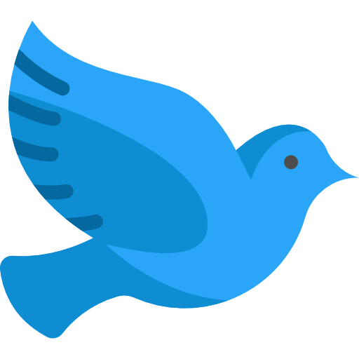

Modemové profily definujú parametre modulácie a demodulácie zvukového signálu.
Žiadne profily. Kliknite na "Pridať profil" pre vytvorenie nového.
USB Zariadenia
Pripojenie USB zariadenia umožňuje automatické prepínanie medzi vysielaním a prijímaním.
Môžete vybrať profil, ktorý sa má automaticky použiť pri pripojení zariadenia.
Nepripojené
Žiadne zariadenie
O knižnici
KnižnicaTinyTUS
Verzia–
PopisSoftvérový modem pre prenos dát cez akustický kanál
Načítavam...
Oscilátor

Holub™
PREZÝVKA
Potvrďte odstránenie
Naozaj chcete odstrániť tento profil? Túto akciu nie je možné vrátiť späť.